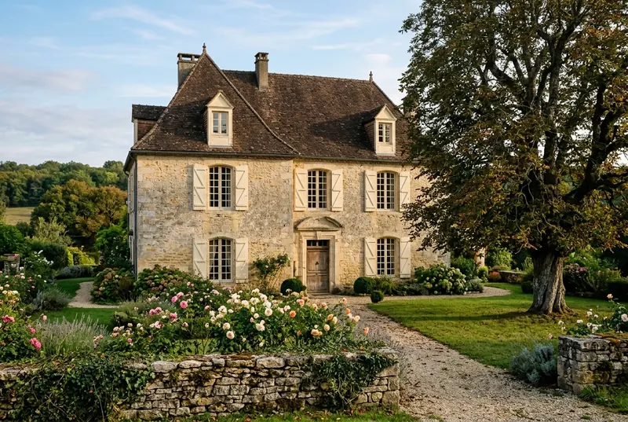

The area
Around Villars
The Périgord Vert lives up to its name: it is the greenest and quietest part of the Dordogne, with narrow valleys and villages of golden stone.
Not to scale: each circle is a travel time from the house.
On foot 20 minutes' walk at most
Photo Juliofsanguino, CC BY-SA 4.0 Puyguilhem castle
A Renaissance castle with slate roofs, reminiscent of those of the Loire; the park is free to visit.
Open April to October
François’s tip: the park is perfect for a picnic.
See on the map

A few minutes away 15 minutes' drive at most
Photo Mj.galais, cropped by Andrew Dalby, CC BY-SA 3.0 The Villars caves
Prehistoric paintings and halls of crystals, on a one-hour guided tour.
See on the mapPhoto Père Igor, CC BY-SA 3.0 Boschaud abbey
The ruins of a Cistercian abbey at the bottom of a small valley, free to visit all year round.
See on the mapPhoto Père Igor, CC BY-SA 3.0 Saint-Jean-de-Côle
One of the most beautiful villages in France: its square, its castle and its humpback bridge.
Hélène’s tip: on Sunday morning, before the visitors arrive.
See on the mapPhoto Marie-Lan Nguyen, CC BY 4.0 Brantôme
The abbey set against the cliff, and the Dronne flowing all around the village.
See on the map
_dordogne_-24-_photo_3_cropped.jpg){kind=link}
.JPG){kind=link}


Half a day out 45 minutes at most
Photo Père Igor, CC BY-SA 3.0 The Périgord Vert rail-bike
Ten kilometres by pedal-powered rail-bike along an old railway line, beside the Isle.
Open April to October
François’s tip: book the day before in summer; the 10 am departure is the coolest.
See on the mapPhoto Martialheland, CC BY 4.0 Bourdeilles castle
Two castles on the same rock, one medieval, the other Renaissance, high above the Dronne.
See on the mapPhoto Père Igor, CC BY-SA 4.0 Périgueux
Saint-Front cathedral, the lanes of the old town and the Périgord museum of art and archaeology.
See on the map
.JPG){kind=link}


A day out further
Photo Jebulon, CC0 Hautefort castle
A classical castle sitting on its hill, with its formal French gardens.
See on the mapPhoto Benjamin Smith, CC BY-SA 4.0


Markets
Market days.
- Mondayno market nearby
- Tuesdayno market nearby
- WednesdayPérigueux, morning
- Thursdayno market nearby
- FridayBrantôme, morning
- SaturdayThiviers, morning
- SundaySaint-Jean-de-Côle, morningJune to September
Season by season
When to come?
What’s on, season by season.
Spring
The paths are in bloom, the castles open their doors again and the Puyguilhem park turns green.
- Early June · Open gardens weekend (Rendez-vous aux jardins), nationwide
Summer
The pool, long evenings on the terrace, and a market in a nearby village almost every other morning.
- Late August · The Sinfonia festival, Périgueux
Autumn
Ceps and chestnuts, the woods turning russet, and roads that are quiet at last.
- Mid-September · European Heritage Days, nationwide
Winter
A fire in the big fireplace, the Thiviers foie gras markets, villages given back to the people who live there.
- December · The foie gras market, Thiviers
Getting here
Finding your way to us.
By car
From Brantôme, head for Villars; the house is the last one before the village, on the left, behind the stone wall and the big walnut tree.
La Maison du Noyer, Lieu-dit le Noyer, 24530 Villars
By train
Périgueux station, 40 km away (40 minutes).
By plane
Bergerac airport, 95 km away (1 hr 25 min).
For everything else, opening times and tickets: the Brantôme en Périgord tourist office.

The house
La Maison du Noyer, a place to drop your bags.
10 people · 5 bedrooms · from €1,650 a week